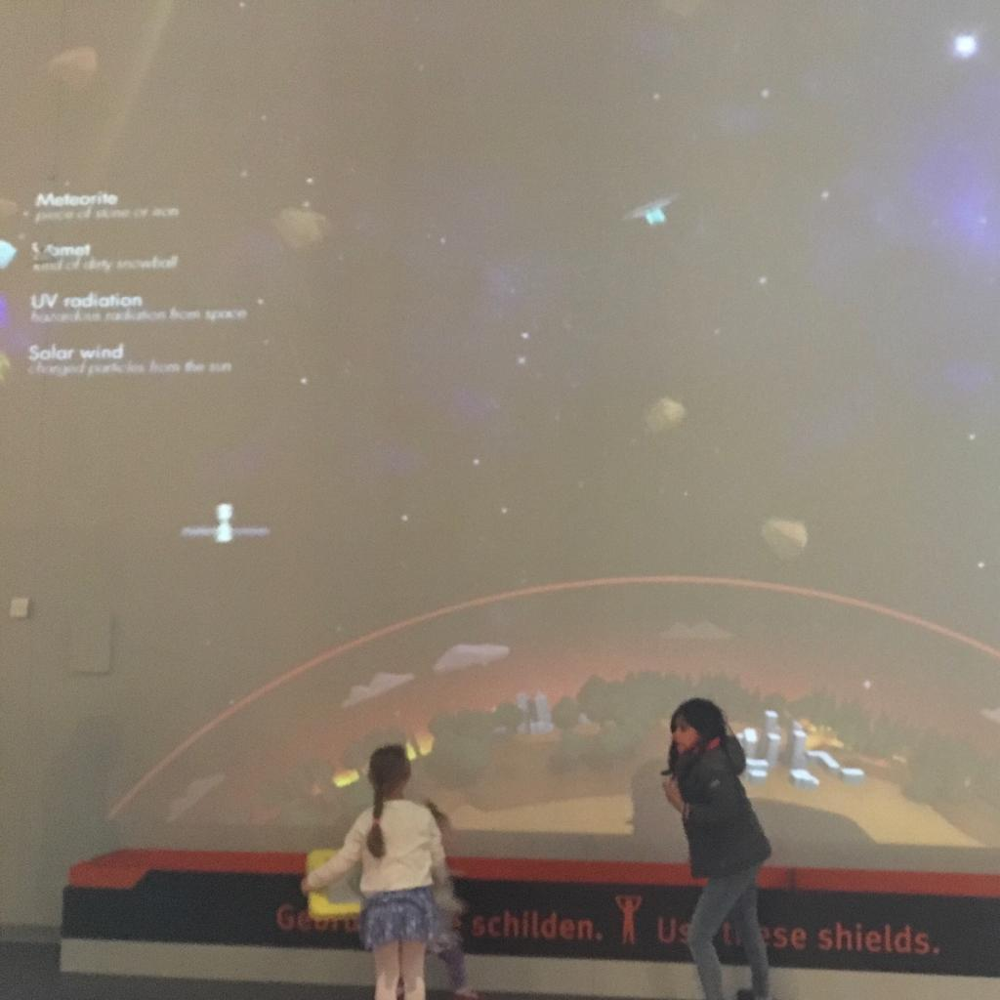
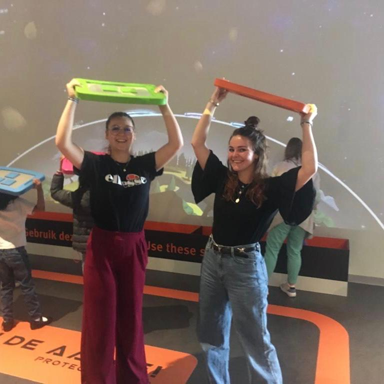

Met de excursie ben ik naar NEMO in Amsterdam geweest. Voor deze opdracht moest ik een installatie gekozen de ik het meest interessant vond op het technische gebied.
Voor deze opdracht heb ik gekozen voor de meteorieten regen op de derde etage. Bij deze installatie moest je de aarde beschermen door de meteorieten en afval van de wereld af te houden. Er hing een heel groot scherm waar de wereld op werd afgebeeld en vanaf boven kwamen de meteorieten en het afval op de wereld af om hem te vernietigen. Aan de linker kant kon je zien wat de vliegende objecten moesten voorstellen. Op de grond was een groot gemarkeerd stuk waar je in moest staan vooraan in de bakken lagen vierkanten plankjes die je boven je hoofd moest houden. Wanneer je deze boven je hoofd hield zag je jouw plankje in het scherm verschijnen als een soort schilt voor de aarde. Door met het plankje heen en weer te lopen kon je zo de meteorieten en de rommel weghouden. Wat voor mij alleen onduidelijk was, was of je het spel echt kon winnen of niet want ik heb er best wel een tijd bijgestaan maar er was geen winnaar of verliezer aangekondicht.
De installatie werkte met een beamer. De beamer scheen het beeld op de muur die je kon zien. Ook zat er een sensor die de scheelden kon detecteren. Er zat namelijk een zilver vlak op de plankjes die reageerde met de sensoren. Zo was de sensor gekoppeld aan de beamer waardoor jouw plankje op het scherm verscheen. Ik vond deze installatie interessant omdat hij heel opvallend was. Er kwamen veel mensen op af waardoor hij bij mij gelijk opviel. Wat er leuk aan was is dat je dit samen kon doen met wel een stuk of 10 mensen maar ook gewoon alleen. Het aantal meteorieten pastte zich hier ook op aan. Hoe meer mensen hoe meer afval etc. Daarom vond ik de installatie goed werken. Tot slot vond ik het leuk dat je er echt voor moest bewegen en heen en weer lopen in plaats van zittend op een stoel.
Ik vond het erg leuk om NEMO te bezoeken. Ondanks dat ik niet onder de doelgroep viel was het heel leuk om alle stelages vanuit een ander perspectief te bekijken. Alle kinderen speelden namelijk op de stelages, maar doordat we van te voren een opdracht kregen ben ik heel anders naar alles gaan kijken. Ik vond het interessant om dan te kijken van welke technieken er gebruik werden en gemaakt en zo viel me ook op dat er van meer technieken gebruik werden gemaakt die ik kenden dan ik had verwacht.
 